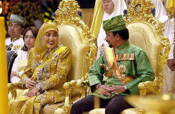

ประเทศบรูไน 
สตรีชาวบรูไนจะแต่งกายมิดชิด นุงกระโปรงยาว เสื้อแขนยาว และมีผ้าโพกศีรษะ คนต่างชาติ จึงไม่ควรนุ่งกระโปรงสั้น และใส่เสื้อไม่มีแขน ควรหลีกเลี่ยงเสื่อผ้าสีเหลือง เพราะสีเหลืองถือเป็นสีของพระมหากษัตริย์